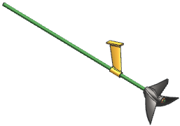

打开部件并开始创建检查包
-
确认未选中使用部分加载
 复选框之后，打开 ckm1_assem_power。
复选框之后，打开 ckm1_assem_power。
-
选择分析→Check-Mate→编创测试。
-
如果出现 Check-Mate 编创测试信息框，查看之后点击确定。
-
在编创测试对话框的创建/编辑检查包选项卡中，键入 xxx_profile，其中 xxx 表示您名字的首字母缩写。
-
在显示名称输入框中，键入我的检查器。
-
在测试类别输入框中，键入 Check-Mate 课程检查包。
-
确保何时检查是设置为手工。
-
确保未选中在部件中保存日志
复选框。